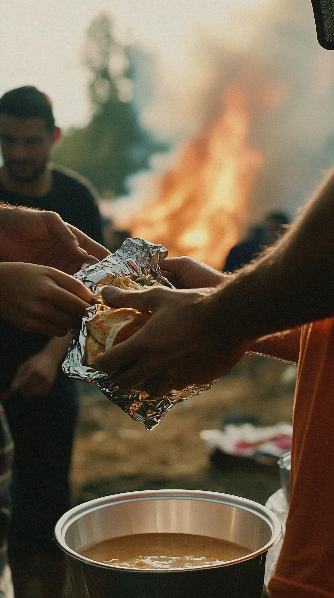
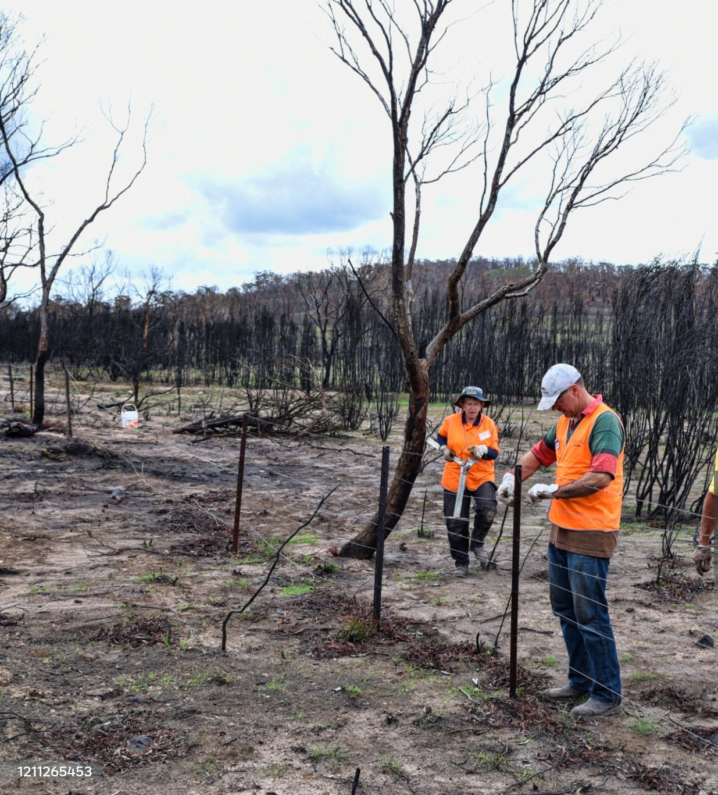
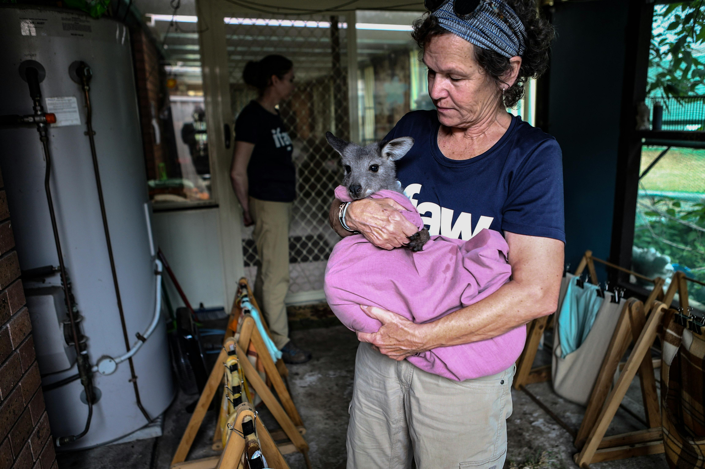
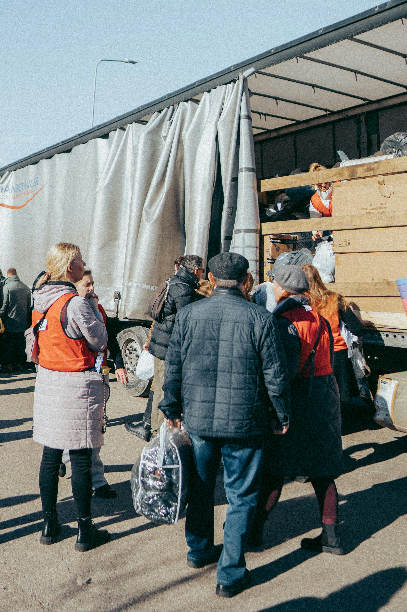
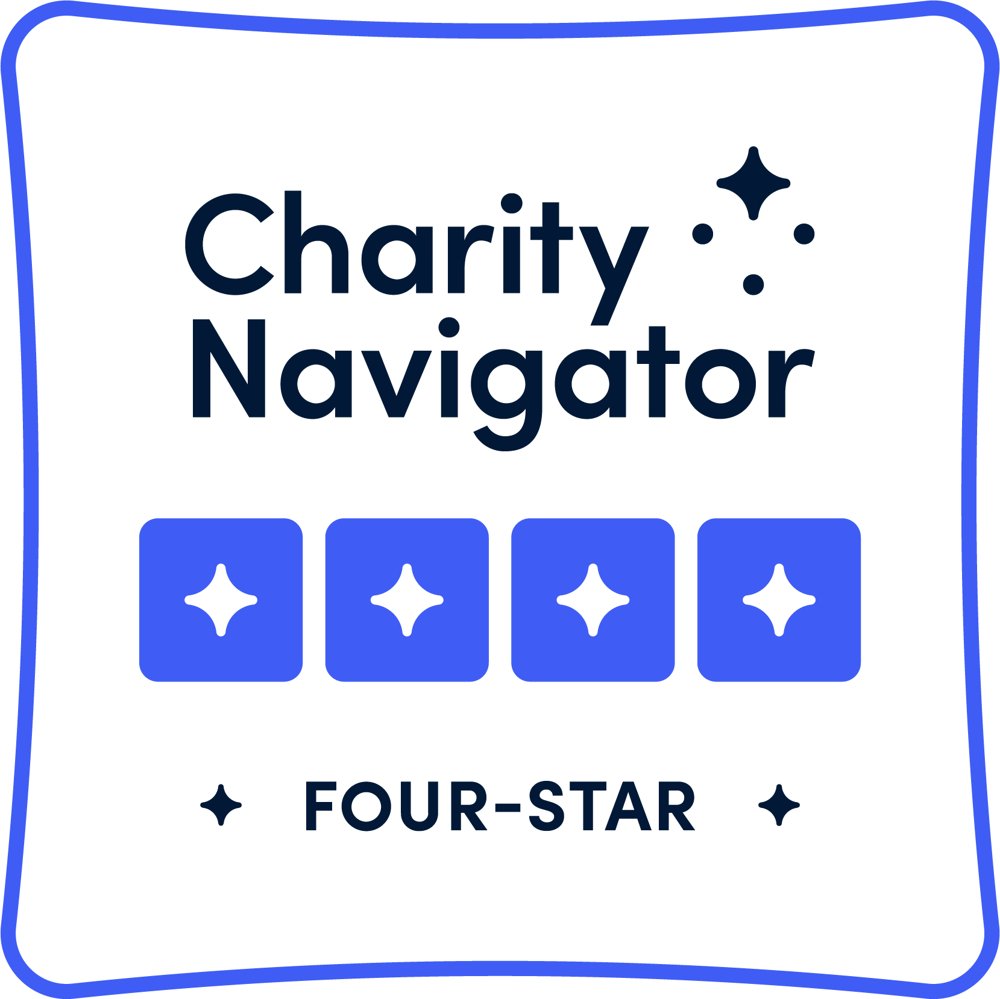
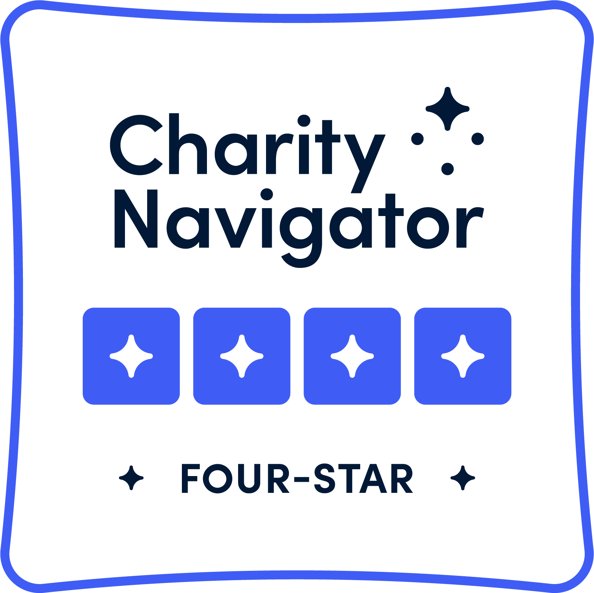

Volunteer for Wildfire Relief
🔥 "Wildfires destroy homes—YOU can help rebuild lives!"
Join us on our global volunteer programs where we provide:
- Three meals a day
- Free accomodation
- No program fee to volunteer
Why Volunteer?
Explore opportunities to make a real difference by volunteering in wildfire relief efforts across the United States. Numerous organizations are working tirelessly to support affected communities and ecosystems, and they need your help. Choose from a variety of volunteer roles, including:
- Diverse Volunteer Roles: Choose from a variety of impactful programs, including emergency shelter support, debris cleanup, animal rescue, community outreach, rebuilding, and environmental restoration.
- Locations Across the USA: Programs based in Paradise (California), Boulder (Colorado), Medford (Oregon), Santa Fe (New Mexico), Redding (California), Grants Pass (Oregon) and etc.
- Flexible Durations: A variety of short term and long term projects to choose from.
- Skill Development: Gain hands-on experience in areas like teamwork, compassion, construction, environmental conservation,community outreach and etc.
- Immediate Impact: Make a real difference by helping families, animals, and ecosystems recover from devastating wildfires.
- Supportive Environment: Work alongside experienced coordinators and fellow volunteers in a collaborative and caring atmosphere.
- No Experience Needed: Most programs welcome volunteers of all skill levels, with training provided on-site.
- Easy Enrollment: Simple and straightforward sign-up process—click "Enroll Now" to join a project today!
Emergency Shelter Volunteer
Location: Paradise, California
Duration: 1-2 weeks
Skills needed: Compassion, organization, teamwork
Assist in setting up and managing emergency shelters for families displaced by wildfires. Help with meal destribution, registration, and providing basic necessities.
Debris Cleanup Volunteer
Location: Boulder, Colorado
Duration: 3-5 days
Skills needed: Physical stamina, safety awareness
Join efforts to clear debris, ash, and hazardous materials from properties affected by wildfires. Help families begin the recovery process.
Animal Rescue Volunteer
Location: Medford, Oregon
Duration: 1-2 weeks
Skills needed: Animal handling, compassion
Assist in rescuing and caring for pets and livestock displaced by wildfires. Help at local animal shelters or foster animals temporarily.
Community Outreach Volunteer

Location: Santa Fe, New Mexico
Duration: 1-2 weeks
Skills needed: Communication, empathy, resourcefulness
Help connect wildfire survivors with resources like housing, financial aid, and mental health services. Distribute information and provide support.
Rebuilding and Construction Volunteer
Location: Redding, California
Duration: 1-3 weeks
Skills needed: Construction experience, teamwork
Support rebuilding homes and community structures damaged by wildfires. Skilled volunteers (carpenters, electricians) are especially needed.
Environmental Restoration Volunteer

Location: Grants Pass, Oregon
Duration: 1-3 weeks
Skills needed: Environmental awareness, physical stamina, teamwork
Participate in reforestation, erosion control, and habitat restoration projects to help heal ecosystems damaged by wildfires. Assist in monitoring and protecting wildlife in affected areas.
Sarah Thompson
★★★★★
10 Jan 2025
Experience: Volunteering in Paradise, California, was an experience I 'll never forget. When I first arrived, the devastation from the wildfires was overwhelming—entire neighborhoods reduced to ash, families displaced, and a community in shock. But amidst the chaos, I found hope in the resilience of the people and the dedication of the volunteers. My role was to help set up and manage emergency shelters for families who had lost everything. I assisted with meal distribution, registration, and providing basic necessities like clothing, toiletries, and blankets. It was heartbreaking to see so many people in need, but their gratitude and strength kept me going. One moment that stands out was helping an elderly couple find a temporary home—they hugged me and said, 'You 've given us hope. ' That made all the hard work worth it. The days were long, and the work was emotionally draining, but the sense of purpose I felt was unparalleled. I met so many incredible people—both volunteers and survivors—who inspired me with their kindness and determination. The teamwork among the volunteers was amazing; we supported each other through the challenges and celebrated small victories together. This experience has changed my perspective on life. It taught me the importance of community, compassion, and taking action when it matters most. I 'm so grateful I could be part of the relief efforts in Paradise, and I encourage anyone who can to volunteer—it 's tough, but it 's one of the most meaningful things you 'll ever do.🥹❤
Location: Paradise, California
Profile: American, 28
Volunteer Role: Emergency Shelter Volunteer
Carlos Mendez
★★★★☆
03 Feb 2025
Experience: Clearing debris in Boulder was hard work, but it felt good to help families start rebuilding their lives. The organizers were very supportive, and I met so many inspiring people. I’d do it again in a heartbeat!
Location: LA, California
Profile: Mexican, 35
Volunteer Role: Debris Cleanup Volunteer
Sonali Deraniyagala
★★★★★
25 Feb 2025
Experience: Volunteering in Grants Pass was one of the most fulfilling experiences of my life. Coming from Sri Lanka, I’ve witnessed firsthand how natural disasters can devastate communities and ecosystems. When I heard about the wildfires in Oregon, I knew I had to help. Joining the environmental restoration team allowed me to contribute to something bigger than myself. We worked on reforestation projects, planting hundreds of trees to restore the burned areas. It was physically demanding, but every sapling we planted felt like a step toward healing the land. I also helped with erosion control measures, which was fascinating to learn about. One of the most touching moments was when we spotted wildlife returning to the areas we were restoring; it felt like nature was thanking us. The team was incredibly supportive, and I made friends from all over the world. It was inspiring to see people from different backgrounds come together for a common cause. As a Sri Lankan, I felt proud to represent my country and contribute to global environmental efforts. This experience has deepened my appreciation for nature and the importance of community. I highly recommend volunteering for environmental restoration...it’s hard work, but the impact is truly rewarding.
Location: Grants Pass, Oregon
Profile: Sri Lankan, 29
Volunteer Role: Environmental Restoration Volunteer
Emily Zhang
★★★☆☆
15 Jan 2025
Experience: Working with animals in Medford was such a fulfilling experience. Seeing the relief on pet owners' faces when we reunited them with their furry friends was unforgettable. I’m so glad I could help!
Location: Boulder, Colorado
Profile: Canadian, 22
Volunteer Role: Animal Rescue Volunteer
Share Your Volunteer Experience
We'd love to hear about your experience! Your feedback helps future volunteers and improves our programs.
Contact Us
info@ember_echovolunteers.com +64-6-758-7949 | International 1-877-342-6588 | USA/Canada Call Free 0-800-031-8376 | UK Call Free 1-800-557-380 | Australia Call Free 
